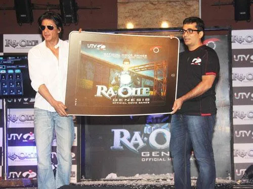

Part II · The First Digital Empire Starts With…, 2000 to 2013 · 12 of 57
Chapter 10 · Ra.One, 2011: building a digital kingdom
[image: G.One, the limited-edition collector’s figure, numbered out of 5,000]

The McDonald's Happy Meal launch for Ra.One, Mumbai, 2011. (Image: Final Thesis archive)

G.One, “Superhero with a H.A.R.T”: a limited-edition collector’s figure numbered out of 5,000. (Image from the Final Thesis archive)
Ra.One premiered in Dubai on 24 October 2011 and opened in India on 26 October, the Diwali weekend. On screen it was a superhero film: a game designer builds a villain for his son, the villain escapes the game, and a hero called G.One steps out of the code to stop him. (Fact. Wikipedia: Ra.One) Off screen it was the most ambitious attempt Indian cinema had made to build an intellectual property rather than a film. (Analysis)
The campaign ran for about nine months. Its reported marketing budget was ₹52 crore, about ₹15 crore of it on the internet. (Fact. Wikipedia) A month before release Business Today put it at about ₹40 crore against a production cost of about ₹160 crore, and reported ₹77 crore for distribution rights, ₹35 crore for satellite rights and ₹5 crore for the game. (Fact. Business Today, 27 Sept 2011; both sets of figures are kept)
The brief was not to sell tickets for a weekend. It was to build a universe that would outlive the weekend. (Recollection; Analysis)
What was built
| Layer | What existed | Source |
|---|---|---|
| Character system | A style guide fixing G.One’s colour, pose and proportion so any partner could reproduce him; Little G.One; a G.One comic | Recollection; the author’s archive |
| Games | Ra.One – The Game for PlayStation 2 and 3, with Sony Computer Entertainment Europe, released 5 Oct 2011; the social game Ra.One Genesis with UTV Indiagames, on Facebook, Twitter, iOS, Android, Nokia Ovi and DTH | Fact. Wikipedia; Social Samosa, Nov 2011 |
| Merchandise | Toys, PC tablets, apparel; a G.One robot in McDonald’s Happy Meals; an official G.One store with a loyalty programme | Fact. Wikipedia; exchange4media, 27 Sept 2011 |
| Brand partners | Western Union (a million-dollar global campaign), Horlicks, Linc, McDonald’s, Sony, YouTube; then Ducati, Tommy Hilfiger, Videocon, TAG Heuer, Volkswagen; more than 25 by release | Fact. exchange4media; Business Today; Moneylife |
| Digital | Official site from 31 May 2011; a YouTube channel and Google+ presence launched with Google; a 40-page digital comic; on 20 Oct 2011 the first live Google+ chat by an Indian film personality | Fact. Wikipedia; exchange4media |
| Outdoor | 1,700 billboards planned | Fact. Business Today |
[image: G.One in Ra.Ville, the Ra.One comic, special edition]

G.One in Ra.Ville, the campaign comic, special edition: readers spotted twelve codes inside and submitted them on the film’s website for a chance to become a character in the next issue. (The author’s archive)
The stage in Mumbai. At the September 2011 launch of the film’s partnership with Google and YouTube, seated beside Rajan Anandan, then head of Google India, he said he “wanted to leverage the full potential of digital media”. (Fact. Business Today; Campaign India) Then he introduced the author to the audience: a young woman who used to work with him, with whom, years earlier, he had started a company and lost everything, and who had left her job to make the Ra.One digital campaign happen. (Recollection; archive video of the event, uploaded at Khan’s request; paraphrased from an automatic transcript, his exact words to be confirmed)
[image: Shah Rukh Khan with Rajan Anandan of Google India at the Ra.One and YouTube event, 2011]

Shah Rukh Khan with Rajan Anandan of Google India at the Ra.One and YouTube event, Mumbai, 2011. (Archive: the author’s collection)
What it earned and won. More than ₹207 crore worldwide. (Fact. Box Office India via Wikipedia) Its effects won the National Film Award and the Filmfare Award for special effects. Its marketing won Best Marketed Movie at the ETC Bollywood Business Awards on 9 January 2012, and Best Marketed Film and Best Use of New Media at the Zee Cine Awards on 21 January 2012. (Fact. Wikipedia: accolades of Ra.One) The FICCI-KPMG media report of 2012 called it “one of the longest and the most elaborate marketing campaigns in the history of Indian cinema”. (Fact. KPMG-FICCI 2012) [Unverified] the figure of 64 merchandise items, from the author’s licensing records.
In 2011 most Indian film campaigns treated the internet as a place to upload a trailer. Ra.One treated it as part of the product. (Analysis)
From the Final Thesis
Added from the Final Thesis, word for word. Where a figure here differs from the sourced figure earlier in this chapter, the chapter’s figure stands; see Addendum B.
RA.ONE (2011): When a film tried to become a technology platform
The most important starting point is not the film’s reception. It is the architecture of the campaign.
According to the FICCI–KPMG Indian media and entertainment industry report published in 2012, Ra.One had an estimated production budget of approximately ₹100 crore, with another ₹55 crore invested in marketing and promotion. The report describes one of the most elaborate campaigns in Indian cinema at the time, beginning almost nine months before release.
That expenditure supported a system of activities that extended far beyond conventional advertising.
(Final Thesis, section 59)
The innovation inventory
| Innovation | Documented execution |
|---|---|
| Character architecture | A 100-page style guide for G.One established a consistent character identity for merchandise and digital assets. |
| Merchandise | An in-house e-store offered 64 original merchandise items. |
| Gaming | Social-media action game and adaptations for smartphones, feature phones, DTH, tablets and Facebook. Sony developed a PlayStation 2/3 game; UTV India Games developed character-based digital games. |
| Publishing | Weekly online graphic-novel strips and a print graphic novel distributed to 33 million homes through a newspaper partnership. |
| Video | Custom YouTube film channel, exclusive videos and promos; KPMG reported more than 250,000 views on the first day of release. |
| Social media | Fan interaction and promotion through Shah Rukh Khan’s then-reported 4.2 million Twitter followers. |
| Technology | Approximately 3,500 visual-effects shots, with Red Chillies VFX working alongside international studios. |
| Distribution | KPMG reported 3,100 domestic prints, including 400 in 3D, and 1,100 overseas prints, including 200 in 3D. |
Source: FICCI–KPMG, Indian Media and Entertainment Industry Report 2012, Ra.One case study. These are historical, source-reported figures, not independently audited campaign analytics.
The brand list is equally revealing. KPMG names Volkswagen, TAG Heuer, Western Union, Ducati, Videocon, Godrej, Coca-Cola, HCL, Horlicks, HomeShop, Nokia and Google among the campaign’s associations.
The report attributes ₹52 crore in payments to more than 25 associated brands, ₹15 crore in gaming and merchandising revenue, ₹38 crore in satellite rights and ₹15 crore in music rights. It also reports a UK government grant of ₹20 crore associated with co-production. These figures must be read in their original context and should not be treated as a modern audited profit-and-loss statement.
The significance is not that every element succeeded equally.
It is that the film attempted to connect the character, the story, the technology, the audience, the merchandise and the commercial partners into one recognisable universe.
That is a different proposition from buying advertising space for a release date.
(Final Thesis, section 59)
A. RA.ONE and G.ONE: marketing as franchise creation
RA.ONE’s documented marketing extended beyond the conventional trailer-and-poster cycle. The film’s campaign included:
- An official website and YouTube presence.
- A Google+ live fan interaction, described in published accounts as the first of its kind by an Indian film personality.
- A multi-city promotional tour and a 3,600-foot-long fan-mail installation.
- Merchandise including toys, apparel, and tablets.
- Games and technology-related promotional partnerships.
The merchandise and game activity was especially significant because it attempted to turn G.ONE into a recognisable character with a life beyond the film’s theatrical run.
Professional interpretation: RA.ONE was not just a movie campaign. It was an attempt to establish a film-based entertainment IP and a consumer-facing ecosystem.

Unveiling the Ra.One game with UTV Indiagames, 2011. (Image: Final Thesis archive)
A toy, a game, a digital avatar, and a film character can reinforce each other. Each can be a different entry point into the same fictional world.
The key benchmark is therefore not the number of promotional impressions. It is whether the campaign creates a reusable relationship between character, audience, technology, and merchandise.
(Final Thesis, section 5)
The radical idea hidden inside the campaign
The most important innovation of Ra.One was not simply that it used social media early.
It was the attempt to make the audience interact with the intellectual property outside the cinema.
The fan was no longer only a ticket buyer. The fan could follow a character, play a game, collect merchandise, encounter the film through another brand, share content, and participate in a digital world that existed before the film opened.
That distinction is fundamental.
Traditional film promotion asks:
How do we persuade the audience to watch this film?
An integrated entertainment ecosystem asks:
How do we give the audience reasons to remain inside this world before, during, and after the film?
The second question has a much longer commercial horizon.
And it is precisely this distinction that makes the Ra.One experiment relevant to the present era of gaming, creator economies, AI-generated content, and interactive entertainment.
(Final Thesis, section 43)
The idea that was hiding in plain sight
A character with a style guide can travel across media.
A game can keep an audience engaged between trailers.
A graphic novel can extend the story beyond the film.
Merchandise can turn a fictional identity into a physical object.
A brand partnership can become part of the campaign’s distribution infrastructure.
A fan can interact with the property without simply watching another promotional video.
In today’s language, this resembles an attempt at a cross-platform entertainment ecosystem.
In 2011, it was a substantial undertaking for an Indian film.
The distinction matters: Ra.One did not invent every individual technique. Its historical significance lies in the scale and combination of these elements, as documented by the contemporary industry report.
And Shah Rukh Khan himself framed the technological ambition in terms of the Indian industry’s need to develop its own superheroes and world-class capabilities.
The question for this case study is whether that ambition became a repeatable system—or remained an unusually ambitious campaign.
(Final Thesis, section 59)